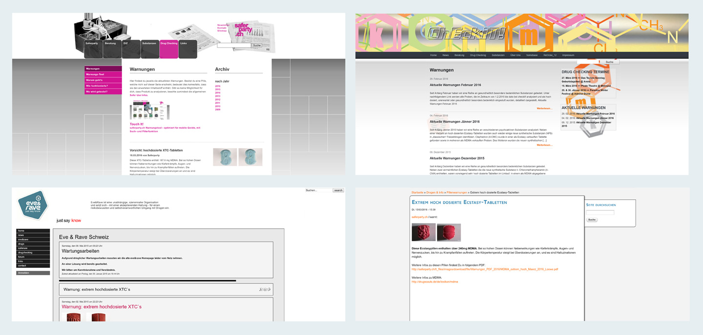
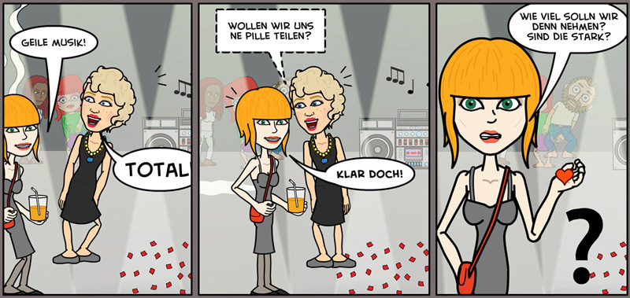
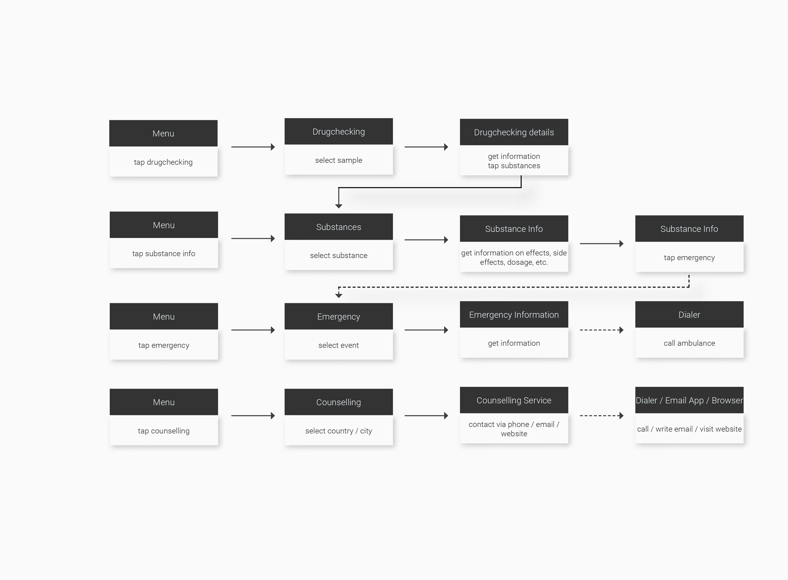
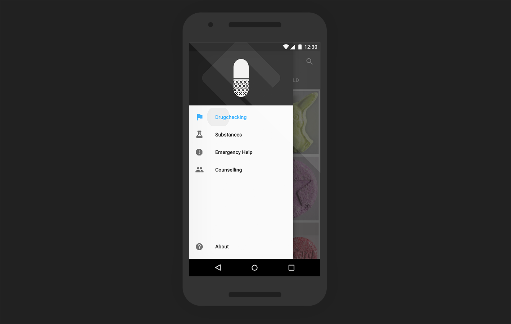
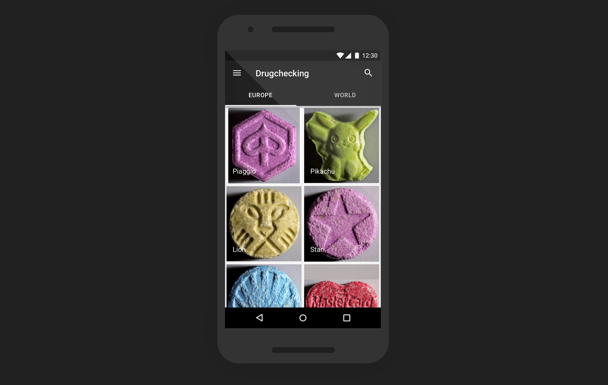
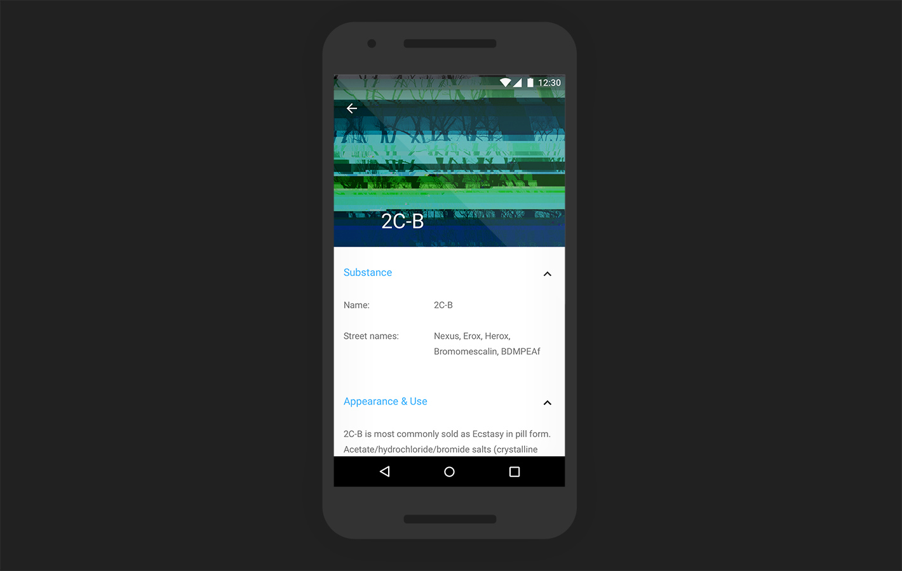
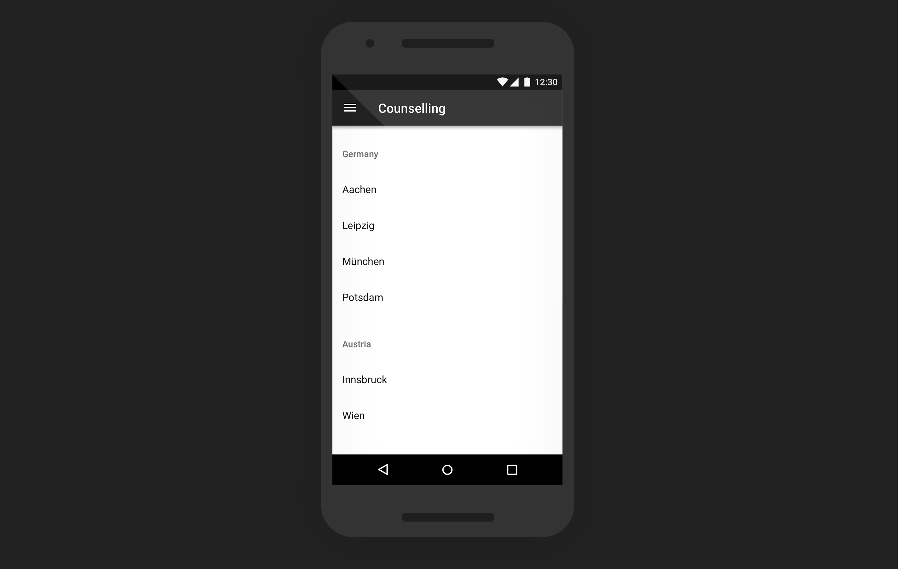

The Challenge
The absence of drug-checking programmes in Germany and the lack in accessible information about drugs, side-effects and emergency situations for people taking drugs raised the following two questions:
How to reduce the harms associated with taking illegal (party) drugs?
Visit Project WebsiteHow to raise health awareness among people consuming illegal (party) drugs?
The Goal
Based on the insights and analysis of existing offers, the KnowDrugs project focuses on the following aspects:
making information accessible at the moment, when the users needs them to increase health-awareness
integrating the most important services of a drug counselling service to lower the barrier for drug users to seek help and advice
using a visual language that adresses the user in a non-moralising way
My Role
As KnowDrugs being my personal project, I have been responsible for every aspect of the project: Conducting initial user research, creating wireframes and high-fidelity prototypes, user tests, brand identity and app development as well as app marketing.
User Research
I conducted interviews with experts and representatives from drug counselling organisations in order to understand their challenges and limitations as professionals in the area of health education. Interviews with people consuming drugs have been of an even higher importance, as they are the end-user I have been designing for. The interviews with people consuming drugs helped me to better understand their motivations and needs - which has been of particular importance due to the complexity of issues regarding drug consumption (e.g. physical, sociological, mental, legal, political, etc.).
Quantitative research further helped me evaluate current solutions and their limitations but also to what extend they already meet people's needs. The quantitative research included traffic and keyword analysis of websites related to drugchecking, substance info and counselling.
Storyboard
Quantitative research further helped me evaluate current solutions and their limitations but also to what extend they already meet people's needs. The quantitative research included traffic and keyword analysis of websites related to drugchecking, substance info and counselling.

Userflow
Quantitative research further helped me evaluate current solutions and their limitations but also to what extend they already meet people's needs. The quantitative research included traffic and keyword analysis of websites related to drugchecking, substance info and counselling.
Sketches
To roughly lay-out my idea and get into the process of prototyping and testing, I used pen and paper to create first sketches of my idea. The goal was to present the main functions the app would have.
Wireframes
I created first wireframes in Balsamiq, which helped me to get down my ideas very quickly but with a higher level of detail.
Hi-fidelity Design
Quantitative research further helped me evaluate current solutions and their limitations but also to what extend they already meet people's needs. The quantitative research included traffic and keyword analysis of websites related to drugchecking, substance info and counselling.
Outcome
Based on the need of the persona, the four most relevant offerings of a drug counselling service regarding harm-reduction have been implemented
drugchecking
showing results of recent drugcheckings, regarding ingredients, amounts and strength
substance information
providing information on a range of legal and illegal substances, their effects, side-effects and interactions with other drugs

emergency help
providing information on a range of legal and illegal substances, their effects, side-effects and interactions with other drugs
counselling & advice
listing drug counselling centres following a low-threshold and accepting approach